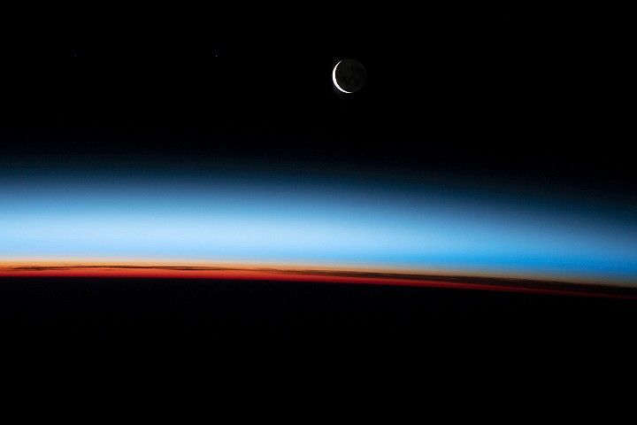

Earth
Gravity and energy balance
I compare simulated temperatures and the energy budget at the top of the atmosphere to study how gravity and radiation affect Earth’s climate.
Climate & planetary science
I use climate models to study the atmospheres of Earth and Mars. I also work on transmission spectra of exoplanets.

Department of Atmospheric and Oceanic Sciences, School of Physics
I began my doctoral studies in 2022.
Yongyun Hu’s research groupI compare simulated temperatures and the energy budget at the top of the atmosphere to study how gravity and radiation affect Earth’s climate.
I model the transport of water vapor and dust on Mars, and how dust and ice clouds affect the passage of radiation through the atmosphere.
I document the physics of a Mars general circulation model and use its output to examine atmospheric processes.
I study how noise, instrument calibration, and observing strategy affect what we can infer from transmission spectra.
EGU General Assembly 2026
Feng Ding, Zhixiang Wan, Robin Wordsworth
For questions about my research or to discuss a collaboration, you can reach me by email.